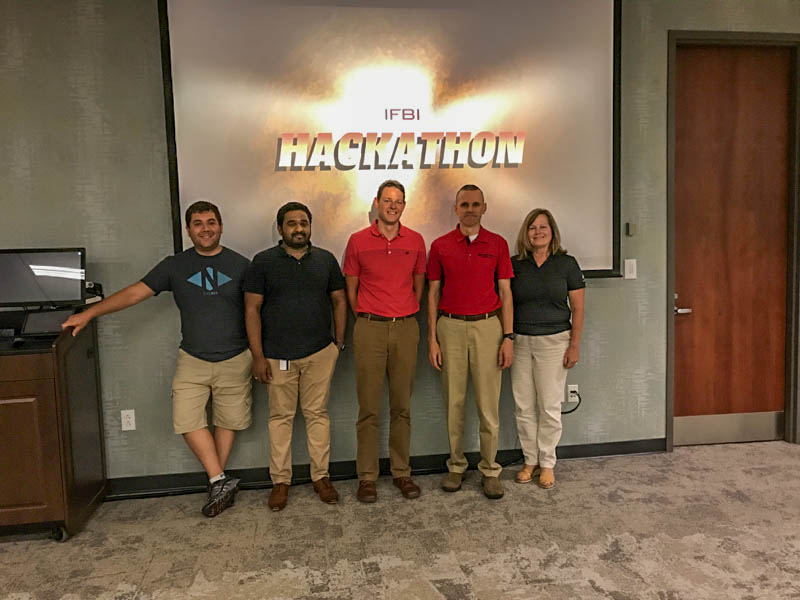

Experience
FILTER:
ALL
WORK
SCHOOL
OTHER
Now
IFBI Hackathon
Indiana Farm Bureau Insurance's First Hackathon
I participated in the company’s first-ever hackathon. There was an insurance theme and 8 teams participated. Our team won
second place for our simplified quoting concept that uses existing data from within the company and other
sources to deliver demographics-driven quotes to potential customers while asking far less questions
than would normally be required.

July
Mission Trip: South Chicago
Roseland Community "Good News" Daycare
Our group of 12 went to southern Chicago for a week to help run a daycare for financially restricted families. While there, I filmed and edited a video to summarize the experience, which you can watch via the link below.
June
Internship: Technology Business Services
Indiana Farm Bureau Insurance
My part time work with Indiana Farm Bureau Insurance developed into another full-time internship. This year, I worked as
a full-fledged employee as I had been with the company long enough to become acclimated to the environment.
In addition to standard support, I led the charge on an overhaul of our device deployment process by
integrating the Microsoft Deployment toolkit with our Configuration Manager installation, integrating
firmware updates and application installations dynamically into the task sequences, and automating several
other tasks that previously had to be performed manually. I developed a PowerShell script to check for
VPN connection and remap users’ network drives when appropriate and deployed it alongside an upgrade
to our Cisco AnyConnect client. I facilitated the removal of all McAfee products from our environment
of over 2,000 devices and headed the desktop-end transition to CrowdStrike and Microsoft BitLocker Administration
and Monitoring. I established a standard process for deploying software with Configuration Manager’s
application model, packaged over 30 pieces of software, and provided documentation and training to other
members of the team. I created group policy for Windows Hello and other application-specific needs. I
also created task sequences and laid the groundwork for conducting bi-annual operating system upgrades
to Windows 10 clients. I also filmed and edited a promotion video for the program as part of a project,
which you can view via the link below.
May
Intro to Data Management Tutor
Indiana University-Purdue University Indianapolis
Tutoring for CIT214 - Intro to Data Management. This involvs interacting with students both in-person and online. I also
provided tutoring for CIT215 Web Programming.
Spring Classes
Indiana University-Purdue University Indianapolis
| 3 |
CIT202 |
Networking Fundamentals |
| 3 |
CIT203 |
Information Security Fundamentals |
| 3 |
CIT213 |
Systems Analysis and Design |
| 3 |
NEWM-N450 |
Usability Principles for New Media Interfaces |
| 3 |
OLS371 |
Project Management |
| 1 |
TCM250 |
Career Planning in Engineering & Technology |
Jan
Technology Business Support
Indiana Farm Bureau Insurance
Following my summer internship at the company, I began a part-time position in the TBS department. At this position, we provide
support to employees of the company and oversee the deployment of new equipment and software.
Fall Classes
Indiana University-Purdue University Indianapolis
| 3 |
CIT215 |
Web Programming (Javascript, PHP) |
| 3 |
CIT214 |
Intro to Data Management |
| 3 |
CIT207 |
Data Communications |
| 3 |
CGT116 |
Geometric Modeling/Visual Communication |
| 3 |
HER-E101 |
Beginning Drawing I |
| 3 |
OLS263 |
Ethical Decisions in Leadership |
Aug
Summer Classes
Indiana University-Purdue University Indianapolis
| 3 |
CIT176 |
Information Technology Architectures |
| 3 |
TECH300 |
Career Enrichment Internship |
Internship: QA Business Services
Indiana Farm Bureau Insurance
This internship focused a lot on the business aspect of software and testing to make sure that everything works they way
that a user would expect. During this 11-week program, I worked primarily on testing for an invoice redesign
project. I also created test plans for Windows 10 deployment, development of a new site, and future mobile
device development. During the internship, I and the 11 other interns were taken on several field trips
to learn more about the insurance industry and interact with real customers. You can see photos below.
May
Teaching Assistant/Grader
Kumon Math and Reading Center
During the spring semester at IUPUI, I worked at Kumon of Brownsburg, a learning facility that specializes in Math and Reading.
The business has a low-tech approach to learning, focusing on learning to think quickly rather than relying
on technology. This was a great opportunity to experience working with children and a far better understanding
the type of business that might resist technological change.
Mar
Lyrics/Video
The Net - Connection Pointe Christian Church
The Net is a young adults group that meets every other Sunday. I assist with set-up, create visual elements and loops, and
manage the on-screen lyrics and notes during the service.
Spring Classes
Indiana University-Purdue University Indianapolis
| 3 |
CIT112 |
Information Technology Fundamentals |
| 3 |
CIT212 |
Web Site Design |
| 3 |
OLS252 |
Human Behavior in Organizations |
| 4 |
SPAN-S131 |
First-Year Spanish |
| 3 |
TCM320 |
Written Communication in Science and Industry |
2016
Graphics Editor
The Exponent
As Graphics Editor, I managed a team of roughly 10 artists. I was responsible for ensuring that articles in the paper had
proper visuals to accompany them. I worked against regular deadlines to oversee my team, create graphics
for print, design page layouts, film coverage videos, and develop website assets. See some of my work
under the "creations" portion of the website.